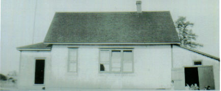
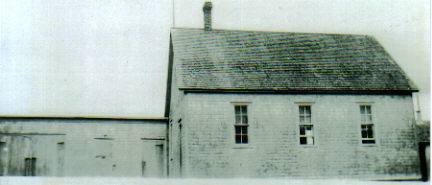
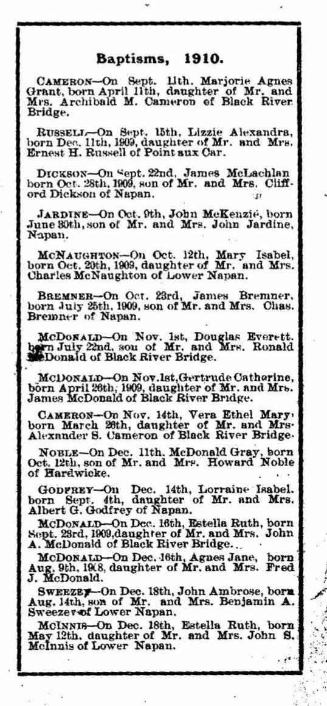
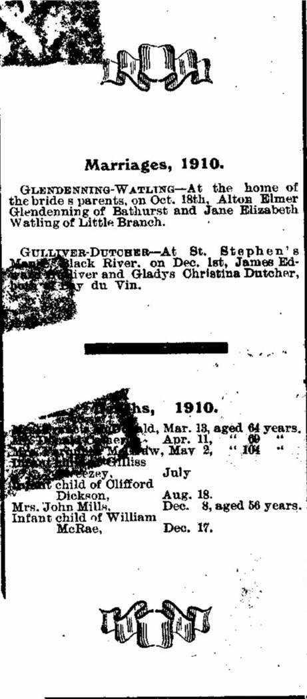

The Family Chronicle
No. 135 March 12, 2006
____________________________________________________________________

Little Branch School in 1929

Cameron School in 1933
Above Photos
Again, I am indebted to Della (Adams) O’Neill for sharing the above photos taken by the teacher of the time, Annie May Loggie.
These, the earliest photos that I have seen so far, are unique in that they show a full side view of both schools.
In the case of the Little Branch School, there was a little wash room with a pump and sink directly beyond the entry to the left. In my time, however, the sink worked but the pump did not so students were designated to take turns carrying water from my home to the school. The shed on the right was used to store wood; the double outhouse was further right perched on the edge of the bank.
Follow-up
Chronicle No. 133 carried a photo of students at the little Branch school in 1929. An earlier chronicle, No. 112, carried a list of students enrolled in 1933-34. Putting the two together may assist you in identifying the students in the photo.
Readers are encouraged to send names of any students they can identify, including themselves and I will print them later.
Teacher’s College Staff
Because of a shortage of teachers, Teachers’ College in Fredericton instituted a six-month training program – two per year. I attended the first half of the year, graduating in June 1947 at age 17. In September, still only 17, I started teaching in the Middle District of Kouchibouguac, an area now included in the National Park.
Recently, I came across a copy of my Teachers’ College class schedule showing the following teachers:
Wallace Testing
MacDiarmid Social Studies
Poirier R & SL(?)
Moore Natural Science
Smith Music
Barnes Manual Training
Mahoney domestic Science
Purdy Reading
Comeau French
Miller Art
Sgt. Meehan PT
Molloy Library

The 1910 Statistics and Directory of St. Stephen’s Church, with 91 families, include the above reports. Other churches listed in the Report were Carmel, Napan with 48 families; Myers Church, Hardwicke with 14 families and Escuminac with 8 families.

The Family Chronicle (Copyright) is an occasional newsletter published by Don Glendenning and posted on the family website. It is intended to share information about my family, community and the times in which I grew up. While every effort is made to be accurate, errors are likely to occur. Comments, enquiries and information may be sent to 62 Queen Elizabeth Drive, Charlottetown, PEI, C1A 3A9. Tel: 902 892 5859. Email: don@glendenning.net Web: www.glendenning.net/don